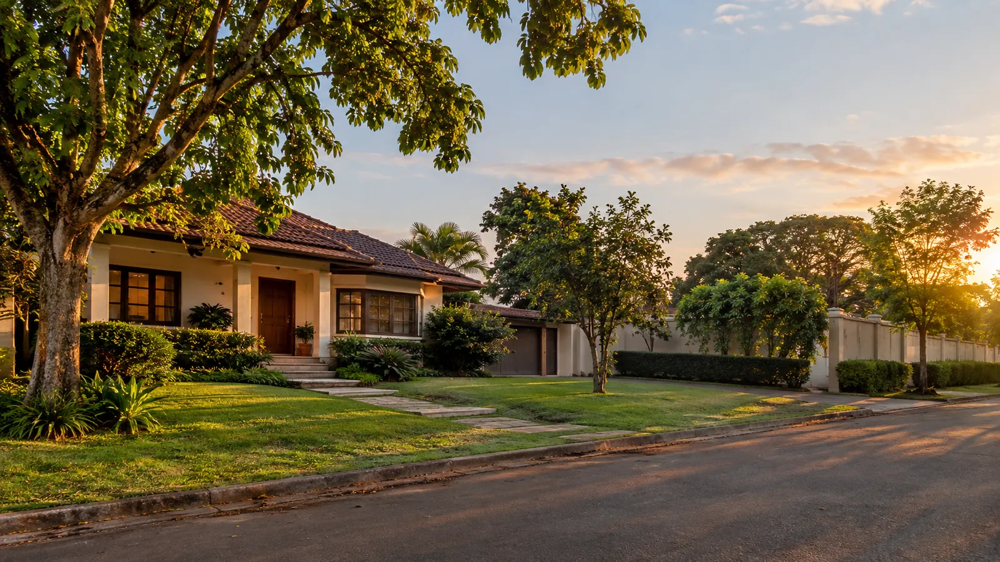

Direito Imobiliário
Segurança jurídica para decisões que envolvem seu imóvel e seu patrimônio.
Atuação jurídica concentrada em propriedade, posse, regularização, usucapião, contratos, imóveis rurais e conflitos imobiliários, com atendimento em todo o Estado de Santa Catarina.
Atendimento em todo o Estado de Santa Catarina.

Direito Imobiliário
Atuação jurídica concentrada em questões que envolvem propriedade, posse e patrimônio imobiliário.
A análise parte da documentação para compreender a situação real do imóvel e identificar o instrumento jurídico adequado.
Principais frentes
Quatro portas de entrada para os problemas mais comuns.
Um resumo da atuação. Para conhecer todas as áreas, consulte a relação completa abaixo.
Usucapião
Regularização da propriedade pela posse, observados os requisitos legais.
Regularização de imóveis
Análise documental e definição do caminho jurídico adequado.
Contratos imobiliários
Elaboração, revisão e análise de negócios relacionados a imóveis.
Posse e propriedade
Atuação em questões possessórias, dominiais e conflitos de divisas.
Encontre a questão do seu imóvel
Qual é a situação do seu imóvel?
Identifique abaixo a situação mais próxima do seu caso.
Áreas de atuação
Atuação imobiliária completa, organizada de acordo com a situação do imóvel.
Conheça as áreas atendidas e acesse a página específica de cada uma.

Usucapião
Regularização da propriedade pela posse, em vias judicial ou extrajudicial quando cabível.
Saiba mais →
Regularização de imóveis
Análise documental, registral e definição do caminho jurídico adequado.
Saiba mais →Adjudicação compulsória
Formalização da propriedade quando o contrato foi cumprido e a transferência não ocorreu.
Saiba mais →
Contratos imobiliários
Elaboração, revisão e análise de instrumentos relacionados a negócios imobiliários.
Saiba mais →Posse e propriedade
Questões relacionadas à posse, propriedade, divisas e conflitos imobiliários.
Saiba mais →Imóveis rurais
Questões documentais, registrais, possessórias e dominiais próprias do imóvel rural.
Saiba mais →Registro de imóveis
Atuação diante de exigências, registros, averbações e situações registrais.
Saiba mais →
Desapropriação
Defesa dos interesses patrimoniais diante de intervenções do Poder Público.
Saiba mais →
Servidão administrativa
Atuação relacionada à implantação de infraestrutura sobre imóveis particulares.
Saiba mais →Litígios imobiliários
Atuação em conflitos judiciais e extrajudiciais envolvendo imóveis.
Saiba mais →Compra e venda de imóveis
Análise da operação, documentação, riscos e instrumentos contratuais.
Saiba mais →Parcelamento do solo
Questões jurídicas relacionadas a parcelamento, loteamentos e organização imobiliária.
Saiba mais →Sobre
Gustavo Paris Vaccari
Advogado com atuação dedicada ao Direito Imobiliário. O trabalho do escritório concentra-se em propriedade, posse, regularização registral, contratos imobiliários, imóveis rurais e situações envolvendo obras públicas.
Cursa pós-graduação em Direito Imobiliário. A atuação abrange todo o Estado de Santa Catarina.
ATUAÇÃO EM TODO O ESTADO DE SANTA CATARINA
Conhecer o escritório →
Como funciona
Da primeira conversa à definição do caminho jurídico.
Contato inicial
Você descreve a situação e informa a cidade do imóvel.
Análise da situação e documentos
A documentação disponível é examinada para identificar a origem do problema.
Definição do caminho jurídico
O instrumento adequado é definido de acordo com o que a documentação indicar.
Condução do caso
Encaminhamento pela via extrajudicial quando cabível ou judicial quando necessário.
Próximo passo
Seu imóvel apresenta uma situação que precisa ser analisada?
Perguntas frequentes
Dúvidas iniciais
O escritório atende em todo o Estado de Santa Catarina?
Sim. A atuação abrange o Estado de Santa Catarina. Parte dos procedimentos imobiliários é conduzida de forma documental e eletrônica; outros, como a usucapião extrajudicial, tramitam no registro de imóveis da situação do bem, o que é considerado no planejamento de cada caso.
Como começa a análise de um caso?
Pela documentação. A matrícula do imóvel e os documentos de aquisição ou de posse são o ponto de partida. A partir deles é possível identificar a origem do problema e qual instrumento se aplica.
Vocês atendem imóveis rurais?
Sim. Imóveis rurais têm exigências próprias de descrição, cadastro e divisas, e representam parte relevante da atuação do escritório.
Meu imóvel não tem escritura. Isso tem solução?
Na maioria das vezes, sim — mas o caminho depende da origem da situação. Imóvel comprado e pago tende a se resolver por adjudicação compulsória. Posse prolongada sem contrato costuma ser caso de usucapião. A análise documental define qual se aplica.
É possível resolver sem processo judicial?
Em muitos casos, sim. Usucapião, adjudicação compulsória, retificação de área e inventário admitem via extrajudicial quando presentes os requisitos. Isso costuma reduzir prazos, mas depende da regularidade documental e da ausência de litígio.
Contato
Vamos analisar a situação do seu imóvel.
Descreva brevemente o que está acontecendo e informe a cidade do imóvel.